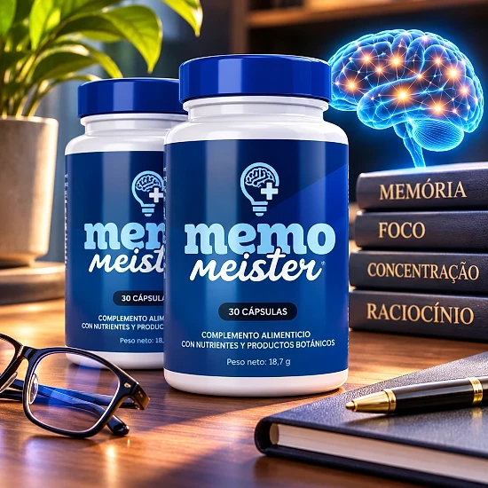
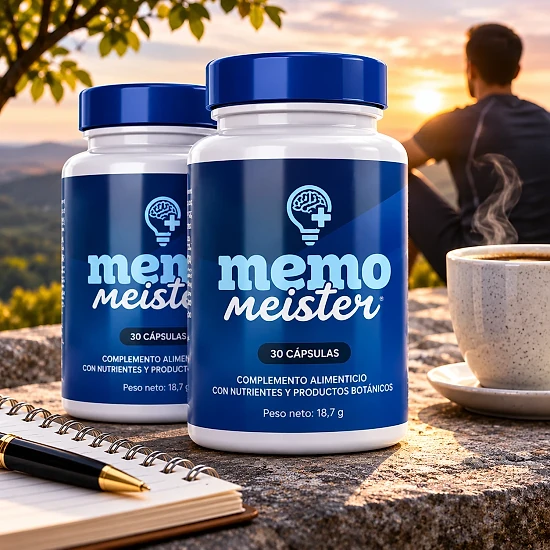
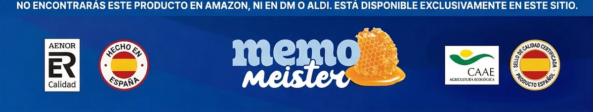

¿Qué es Memo Meister y cómo actúa?
Memo Meister es un complemento alimenticio en cápsulas que el sitio web oficial presenta como un nootrópico natural. Está pensado para acompañar la memoria, la concentración y las capacidades cognitivas en el día a día, a partir de nutrientes y extractos de plantas seleccionados.
La etiqueta española lo describe como un «complemento alimenticio con nutrientes y productos botánicos». Cada frasco contiene 30 cápsulas, es decir, un mes de uso con una cápsula al día, con un peso neto de 25,52 g.
La fórmula reúne ocho ingredientes: la vitamina B3 (niacina), el zinc, la L-citrulina, la L-carnitina, un extracto de corteza de pino, un extracto de raíz de maca, un extracto de piel de uva y un extracto de estigmas de azafrán.
¿Cómo actúa? El sitio oficial recuerda que el zinc contribuye a la función cognitiva normal y que la vitamina B3 contribuye al metabolismo energético normal. La etiqueta añade que la niacina ayuda a reducir el cansancio y la fatiga. Los extractos de pino y de uva son fuentes naturales de polifenoles, y la maca es una planta tradicional de los Andes.
El enfoque es progresivo. Según el sitio oficial, los primeros efectos, como más energía y una mejor concentración, suelen aparecer tras dos o tres semanas de uso continuo, y la marca recomienda tomarlo durante al menos 90 días para un apoyo óptimo.
Según la etiqueta, Memo Meister está fabricado en EE. UU. a partir de ingredientes extranjeros y nacionales, y lo distribuye en la Unión Europea Digistore24 MSLW Limited, con sede en Dublín, con una dirección para devoluciones en los Países Bajos.
Memo Meister sigue siendo un complemento alimenticio: no está destinado a diagnosticar, tratar, curar ni prevenir ninguna enfermedad, y el sitio oficial precisa que sus declaraciones no han sido evaluadas por la EFSA. No sustituye una alimentación variada ni un estilo de vida saludable, y los resultados pueden variar de una persona a otra.
Memo Meister – Ingredientes
La información nutricional de Memo Meister indica la dosis de cada ingrediente por cápsula. Esta es la composición que figura en la etiqueta española y en el sitio oficial:
Vitamina B3, como niacina (20 mg, 125 % del VRN): contribuye al metabolismo energético normal y a reducir el cansancio.
Zinc, como óxido de zinc (11 mg, 110 % del VRN): contribuye a la función cognitiva normal.
L-citrulina (150 mg) y L-carnitina (150 mg): aminoácidos presentes de forma natural en el organismo.
Extracto de corteza de pino, Pinus pinaster (100 mg): fuente natural de antioxidantes.
Extracto de raíz de maca, Lepidium meyenii (50 mg): planta tradicional de los Andes.
Extracto de piel de uva (15 mg) y extracto de estigmas de azafrán (5 mg): ricos en polifenoles; el azafrán es una especia preciosa utilizada desde la Antigüedad.
Los demás componentes son la cápsula vegetal (hipromelosa), la celulosa microcristalina y los antiaglomerantes. Solo la vitamina B3 y el zinc tienen un valor de referencia de nutrientes: para los aminoácidos y los extractos vegetales la etiqueta precisa que no se ha establecido ningún VRN. Para los alérgenos, la etiqueta remite a los ingredientes en negrita.
Memo Meister – Efectos secundarios
Según el sitio oficial, Memo Meister está formulado con ingredientes naturales y es bien tolerado por la mayoría de las personas. Los efectos secundarios se describen como raros y generalmente leves, por ejemplo pequeños cambios digestivos durante los primeros días de adaptación.
Algunas personas, sin embargo, deben abstenerse. La etiqueta indica que el producto no debe utilizarse en menores de 18 años ni en mujeres embarazadas o en período de lactancia. También recomienda consultar con un médico antes de usarlo, especialmente si se toma algún medicamento, se padece alguna enfermedad o se está bajo supervisión médica.
Las preguntas frecuentes del sitio oficial van más allá: aconsejan hablar con el médico antes de combinar Memo Meister con medicamentos, en particular para la diabetes, la hipertensión o los anticoagulantes, y respetar un intervalo de al menos dos horas entre el complemento y otros fármacos.
No se debe superar la dosis recomendada ni utilizar un frasco cuyo sellado de seguridad esté dañado o no exista. Ante cualquier molestia o reacción inusual, conviene interrumpir la toma y pedir consejo a un profesional sanitario, mostrándole la etiqueta del producto. Cada organismo reacciona de forma distinta, y la opinión de un profesional sigue siendo la referencia más segura.
Memo Meister – Dosis
La etiqueta es clara: los adultos toman una (1) cápsula al día. Las preguntas frecuentes de la página de venta aconsejan tomarla con un vaso grande de agua, preferiblemente 30 minutos antes de una comida principal.
Un frasco de 30 cápsulas corresponde, por tanto, a un mes de uso. La página de pedidos habla de dos cápsulas al día, pero la etiqueta del producto indica una sola: esa es la indicación que hay que seguir, sin superar nunca la dosis recomendada.
La constancia cuenta más que la cantidad. El sitio oficial explica que los primeros cambios suelen notarse tras dos o tres semanas, que las mejoras más claras en la concentración pueden llegar después de cuatro a seis semanas, y recomienda tomarlo durante al menos 90 días. Cada persona reacciona de forma diferente.
Para obtener mejores resultados, la marca aconseja combinar Memo Meister con una alimentación equilibrada y actividad física regular. La etiqueta recuerda que los complementos alimenticios no deben utilizarse como sustitutos de una dieta variada y equilibrada y de un estilo de vida saludable.
El frasco debe guardarse en un lugar fresco y seco, por debajo de 30 °C, y fuera del alcance de los niños. La fecha de caducidad figura en la parte inferior del recipiente. Conviene tomar la cápsula siempre a la misma hora para no olvidarla.
Memo Meister – Reembolso
Memo Meister cuenta con una garantía de satisfacción o reembolso de 60 días, según el sitio oficial. Si el producto no cumple las expectativas, es posible solicitar el reembolso íntegro del importe pagado, de acuerdo con las condiciones publicadas por la marca.
Plazo: la solicitud debe hacerse dentro de los 60 días siguientes a la fecha de compra, y la política de reembolso exige la devolución de todos los frascos, vacíos o llenos.
Paso 1: enviar un correo electrónico al servicio de atención al cliente, support@centralmeister.com, indicando el número de pedido y el motivo de la devolución, junto con el nombre, la dirección y los datos de contacto. El sitio precisa que no es necesario esperar una respuesta antes de enviar el paquete.
Paso 2: devolver el paquete a la dirección indicada en el sitio oficial: Memo Meister Returns, Kleine Esch 669, 2841 MK Moordrecht, Países Bajos. Es importante conservar el número de seguimiento, ya que las devoluciones sin seguimiento no se procesan; el coste del envío de vuelta corre por cuenta del cliente.
Paso 3: una vez recibido e inspeccionado el paquete, el servicio de atención comunica por correo si el reembolso se ha aprobado o rechazado. Si se aprueba, el importe se abona en el método de pago original en un plazo de 5 a 10 días laborables.
Para la asistencia, la etiqueta indica también la dirección helpdesk@digistore24.ie. La política completa está en el sitio oficial, y es útil leerla antes de hacer el pedido.
Memo Meister – Opiniones de clientes
-
María García — Madrid, EspañaCompra verificada – 6 frascos
«¡Increíble! Mi energía mental se ha triplicado en 3 meses con Memo Meister. Me siento de nuevo yo misma y puedo concentrarme mucho mejor. ¡Un producto que realmente funciona!»
-
Ana Martínez — Valencia, EspañaCompra verificada – 6 frascos
«Después de la menopausia, pensaba que nunca recuperaría mi vivacidad mental. ¡Memo Meister ha demostrado que estaba equivocada! Me siento de nuevo enérgica y mentalmente lúcida a los 52 años.»
-
Roberto López — Sevilla, EspañaCompra verificada – 6 frascos
«Trabajo como entrenador personal y siempre he probado productos. ¡Memo Meister es diferente! Siento más concentración durante el entrenamiento y más energía. ¡Una excelente experiencia que comparto con los demás!»
Memo Meister – ¿Dónde comprarlo?
Memo Meister se pide en su sitio web oficial, get-meister.com, y el pago lo gestiona Digistore24, la plataforma que utiliza la marca. Según la información oficial, el producto no está disponible ni en Amazon, ni en supermercados, ni en farmacias.
Los frascos que ofrecen vendedores desconocidos pueden parecer idénticos, pero no hay forma de comprobar su procedencia ni cómo se han conservado. Para un complemento alimenticio, eso es un riesgo real para la calidad y la seguridad, y una compra hecha en otro sitio podría no estar cubierta por la garantía de 60 días.
Por eso la mayoría de los compradores pide Memo Meister directamente en la fuente. El sitio oficial permite recibir el producto original, con la atención al cliente y la garantía completa, y la página de pedidos indica un pago único. En el sitio también se puede consultar la composición completa antes de decidir.
Antes de confirmar el pedido, conviene comprobar que se está realmente en el sitio web oficial de Memo Meister, para evitar falsificaciones e imitaciones vendidas en internet.
Para asegurarse de recibir el producto auténtico, la mayoría de los usuarios elige comprar en el sitio web oficial.
¿Memo Meister es una estafa?
A partir del sitio oficial y de la etiqueta, Memo Meister no parece una estafa. Es un complemento alimenticio real, vendido a través de Digistore24, una plataforma de pago consolidada, y pensado para acompañar la memoria, la concentración y la energía mental.
La etiqueta española muestra una información nutricional clara, con la dosis de cada uno de los ocho ingredientes. Las declaraciones sobre el zinc y la vitamina B3 corresponden a funciones reconocidas de estos nutrientes.
El frasco indica también el distribuidor, Digistore24 MSLW Limited en Dublín, una dirección de asistencia y una dirección para devoluciones en los Países Bajos, lo que facilita el contacto en caso de problema.
Algunos mensajes invitan, aun así, a la prudencia. La página de pedidos muestra una cuenta atrás y avisos de existencias limitadas, y la página de venta promete beneficios muy amplios, sobre el apetito, el corazón o el colesterol, que no aparecen en la etiqueta, y cita estudios sobre plantas que no forman parte de la fórmula. Es mejor guiarse por la etiqueta y por las declaraciones sobre los nutrientes.
Cada pedido está cubierto por una garantía de satisfacción o reembolso de 60 días, con un procedimiento de devolución explicado en tres pasos.
Para los adultos que buscan un complemento diario sencillo para apoyar la concentración y la vitalidad mental, Memo Meister puede ser una opción a tener en cuenta, pedido preferiblemente en el sitio oficial y tras consultar al médico si se sigue algún tratamiento.
Para comprobar los detalles del producto o su disponibilidad actual, el sitio web oficial de Memo Meister sigue siendo la opción más segura.

Comprobar disponibilidad en el sitio web oficial
